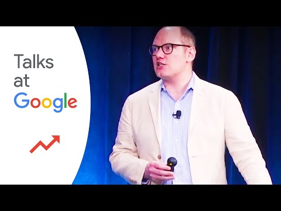
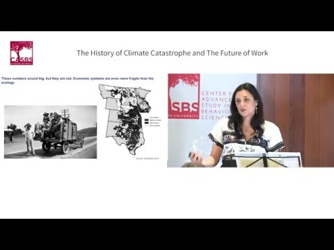
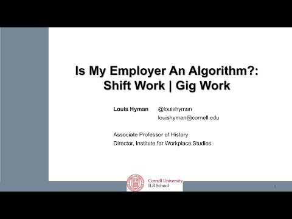

Selected Public Talks
Talks on Work, Debt, Capitalism, and Technology
Recorded talks and conversations from public media, policy forums, and university audiences.

The History of Climate Catastrophe and the Future of Work
Climate change, growth, and inclusion in historical perspective.
Watch symposiumGigged and Temped
The imagined future of work and the unequal present it often legitimates.
Watch conversation
Is My Employer an Algorithm?
How algorithmic management can be redesigned for workers and employers.
Watch talkTo request a speaking engagement, use the contact section on the About page.